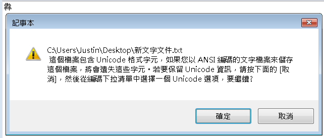
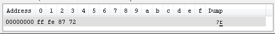
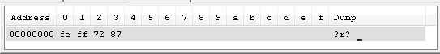

|
|
由
於Big5用了第一個位元組的某個範圍來作為識別是否為中文字，可儲存的文字範圍就大大減少（約為一萬九千多個），如果你儲存的字元，不在
Big5/MS950編碼範圍內，那會如何？如果是Windows中的記事本程式，會出現以下的提示，要你轉存為Unicode格式：  在你按下「取消」後，會出現「另存新檔」的對話框，在右下會有個「編碼」選項，下拉的話，會有Unicode、Unicode big endian與UTF-8三個選項。 Unicode 是由The Unicode Consortium非營利組織所主導的編碼標準，它是一個字元對應一個數字的映射，這個數字稱之為碼點（Code point），在表達字元對應的碼點時，於「U+」之後接著一組十六進位數字來表示字元的編碼，如果使用四個 十六進位制數字，可以表達六萬多個字元，如果使用五或六個十六進位制，則可以表達更多的字元。 Unicode是指字元映射至數字的概念編碼（Conceptual encoding），一個文字的Unicode編碼數字是固定的，而這個數字在電腦中如何用位元組來實作則有不同的方式，Unicode的實作方式就稱為 Unicode/UCS Transformation Format，簡稱 UTF。 如果你直接將方才的範例選擇「Unicode」儲存，用十六進位檢視，你會看到：  「犇」這個字的Unicode編碼是U+7287，對於Windows的記事本若選擇使用「Unicode」儲存，則使用兩個位元組來儲存，Windows的記事本選擇「Unicode」選項時，實際上採用 UCS-2/UTF-16 儲存，一開頭的兩個位元組（ff fe）是用來識別檔案採用的位元組順序，稱為BOM（byte order mark），之後使用兩個位元組來儲存每個Unicode字元。 要注意的是， 「犇」這個字的Unicode編碼是U+7287，實際儲存時的位元組卻是87、72，也就是說，Windows記事本選擇「Unicode」儲存兩個以上位元組的資料時，是先存低位元組，再存高位元組，這樣的儲存方式，是採 Little Endian 的方式，也就是Windows記事本選擇「Unicode」時，實際上採用的是UCS-2/UTF-16 Little Endian。 Unicode指定BOM編碼為U+FEFF。如果讀取檔案開頭的BOM順序是0xfeff，表示檔案採用Big Endian，如果讀取檔案開頭的BOM順序是0xfffe，表示檔案採用Little Endian。 如果使用Windows記事本儲存時的選項是「Unicode big endian」，同樣儲存「犇」，結果會如下：  可以看到，用來表示為Unicode檔案的兩個位元組為fe、ff，與先前的ff、fe相反，而「犇」這個字現在儲存為72、87，與先前的87、72也是相反。如果儲存兩個以上位元組資料時，採先存高位元，再存低位元方式，則這樣的儲存方式，是採 Big Endian 的方式。 這會有什麼影響？如果你使用以下的Java程式來讀取一個存有「這T是e個s測t試」的文字檔案，而文字檔案採Windows記事本中的「Unicode」選項儲存，那麼你會得到亂碼： import java.io.*;
如果存有「這T是e個s測t試」的文字檔案，是使用Windows記事本「Unicode big endian」選項儲存，也就是採UCS-2/UTF-16 Big Endian，則以上程式可以得到正確的文字顯示：
這是因為JVM本身是採Big Endian的方式來處理位元組，對於一個文字檔案採Windows記事本中的「Unicode」選項儲存，則是採Little Endian，用以上的程式讀取當然會是亂碼，如果要正確讀取Windows記事本中的「Unicode」選項儲存的文字檔案，方法之一是在Java中要自行調換位元組順序： import java.io.*; 或者是指定使用UTF-16LE，例如： import java.io.*; 這兩個程式，都可以正確讀取，例如：
有關於UTF-8，則在 下一篇 再繼續說明....XD |